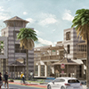
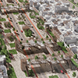
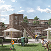
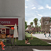
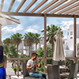
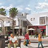
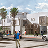
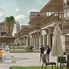

Location
UAE – Sharjah
Client
Government of Sharjah - Directorate of Town Planning and Survey
Status
Concept design stage
Project year
2018
Urban fabric
A flexible bio compacted fabric was chosen, that could accommodate residential, office building, and
commercial spaces. The flexible fabric enables the addition and deletion of parts of the front and rear
interface and also allows changing the shape of the sky line with varied rhythms, thus achieving fabric’s
functional flexibility.
Parks and walkways
The design is keen to provide the largest possible area for pedestrian and gardens and there is more
than one alternative of the parks and the planning of pedestrian areas, with the possibility to choose
between alternatives to conform to the function of buildings that can change from residential to administrative
to commercial.
Hanging Gardens
Perhaps the most distinctive feature of this design is the provision of pedestrian hanging parks that
can be used functionally to facilitate the transition between the two sides of the street, with the possibility
of seating, innovative entertainment, and the ability to re-perceive the street and the various possible
angles of visions. In addition, these gardens can be replicated in different dimensions to achieve a
degree of shade, which is desirable because of the high temperatures in Sharjah.
النسيج العمراني
تم اختيار نسيج متضام حيوى مرن يمكن ان يستوعب فراغات سكنية وادارية وتجارية . مرونة النسيج تمكن من
اضافة وحذف اجزاء من الواجهة الامامية والخلفية وتتيح ايضا تغيير شكل خط السماء بايقاعات متنوعة . وبذلك
تحقق للنسيج مرونة وظيفية ومرونة تشكيلية .
الحدائق وممرات المشاة
حرص التصميم على توفير اكبر مساحة ممكنة لحركة المشاة والحدائق وهناك اكثر من بديل لاماكن الحدائق وتخطيط
اماكن المشاة . مع امكانية التغير بين البدائل للتوافق مع وظيفة المبانى التى يمكن ان تتغير من سكنى
لادارى أو تجارى .
الحدائق المعلقة
تمثل عنصرا متميزا فى التصميم ، توفير حدائق معلقة للمشاة يمكنها ان تستغل وظيفيا لتسهيل الانتقال بين
جانبى الشارع . مع توفيرها امكان جلوس وترفيه غير تقليدية يمكنها اعادة اكتشاف الشارع وعناصرة المختلفة
من زوايا رؤية غير نمطية . بالاضافة الى ذلك يمكن تكرار تلك الحدائق وبابعاد مختلفة لتحقيق درجة من الاظلال
ومن ثم المساعدة على تحريك الهواء وهو شئ مرغوب فيه نظرا لارتفاع درجة الحرارة فى مدينة الشارقة .